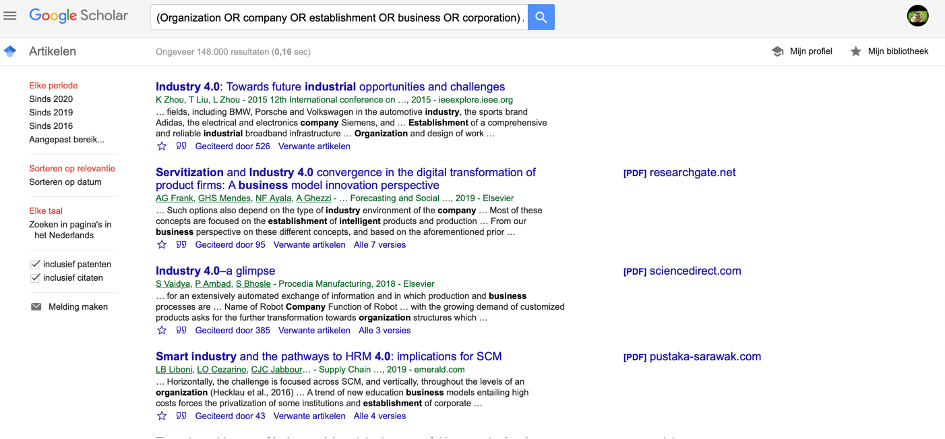
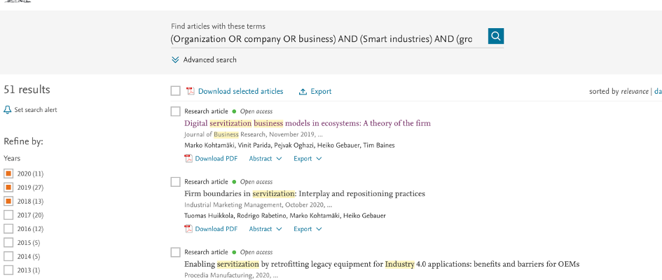

Marieke Pas

Het doel van de opdracht is om relevant kennismateriaal te verzamelen voor een zelfgekozen vraagstuk. Daarbij heb ik gekozen om te onderzoeken wat een bedrijf nodig heeft om te kunnen groeien op het gebied van Smart. Daarbij heb ik mij toegespitst tot het onderwerp servitization. Daarnaast is het ook belangrijk om de zoekstrategieën, de bruikbaarheid van de bronnen, de uiteindelijke selectie en de peer review te beschrijven.
Mijn persoonlijke doel is om een systeem op te zetten voor literatuuronderzoek. Ik vind literatuuronderzoek erg lastig en ik ben er ook niet goed in. Vaak zijn mijn bronnen niet goed genoeg en raak ik snel overweldigd van het aantal artikelen die ik kan vinden. Over het algemeen besteed ik het literatuuronderzoek altijd uit aan mijn groepsgenoten. Echter, heb ik mijzelf als doel gesteld om hier beter in te worden.
Volgens Med School Insiders. (2019) is het belangrijk om eerst de onderzoeksvraag op te stellen voordat je kunt beginnen met het literatuuronderzoek. Deze is als volgt geformuleerd: “Wat heeft een organisatie nodig om te kunnen groeien op het gebied van smart en met name servitization?”
Van Global Health with Greg Martin (2018) heb ik geleerd hoe ik het beste zoekmachines kan gebruiken om artikelen te vinden. Hij begon met booleaans zoeken met associaties van een bepaald woord op basis van je hoofdvraag. Mijn hoofdvraag bevat vier componenten, namelijk: organisatie, groei, smart, servitization en nodig hebben. Hieronder staat een tabel met alle associaties in zowel het Nederlands als het Engels van de hoofdonderwerpen.

Vervolgens heb ik deze associaties verwerkt in zoekbanken. Ik heb gekozen om gebruik te maken van Google Scholar en ScienceDirect. Door beperkingen binnen de verschillende zoekbanken, kon ik niet alle associaties invoegen in mijn zoekopdracht. Hieronder zijn de verschillende zoekopdrachten geformuleerd:
Google Scholar:
(Organization OR company OR establishment OR business OR corporation) AND (Smart industries OR Industry 4.0 OR fourth industry revolution) AND (growth OR evolution OR development OR progress) AND (servitization OR service) AND (necessity OR requirement)
ScienceDirect:
(Organization OR company OR business) AND (Smart industries) AND (growth OR evolution) AND (servitization) AND (necessity OR requirement)
Zoals te zien is in afbeelding 1 en 2, kwamen er een hoop resultaten uit de zoekopdracht. Daarom heb ik de zoekresultaten gefilterd op ‘free access’ en niet ouder dan 2018. Ik heb gekozen voor 2018 omdat smart industries zich snel ontwikkeld.
Afbeelding 1: zoekresultaten Google Scholar
Afbeelding 2: zoekresultaten ScienceDirect
Zoals te zien is in afbeelding 3 en 4, komen er minder resultaten uit na de filtering op basis van gepubliceerde datum en free acces (in sciencedirect).
Afbeelding 3: zoekresultaten ScienceDirect na filtering
Afbeelding 4: zoekresultaten Google Scholar na filtering
Nu is het tijd om naar de artikelen zelf te kijken. Volgens Med School insiders (2019) zou je een artikel moeten lezen volgens een bepaalde volgorde, namelijk:
Op deze manier kan je snel scannen of dit artikel relevant is voor jou. Dit doe je door te kijken naar de titel en het abstract te lezen. Als de informatie niet relevant blijkt te zijn, kun je hier afhaken. Vervolgens kun je de conclusie lezen en ga je tot slot door om de conclusie te begrijpen door de figuren te bekijken en de methoden, de resultaten en de discussie te lezen.
Op dit punt zijn er een aantal artikelen uitgerold die je kunnen helpen met het beantwoorden van je onderzoeksvraag, is het van belang om erachter te komen in hoeverre de gevonden bronnen bruikbaar zijn. Hiervoor heeft de California State University (Meriam Library, z.d.) een checklist ontworpen, de CRAAP-test. CRAAP staat voor Currency, Relevance, Authority, Accuracy en Purpose. Hieronder staat de CRAAP-test uitgewerkt:
Er kan ook gebruik worden gemaakt van de CRAAP-test (Meriam Library, z.d.):
Hieronder volgen een aantal artikelen waarvan ik van mening ben dat zij relevante informatie zouden kunnen zijn om de onderzoeksvraag te kunnen beantwoorden.
Artikel 1
Artikel: Digital servitization business models in ecosystems: A theory of the firm
Naam/Namen Auteur(s): Marko Kohtamäki, Vinit Parida, Pejvak Oghazi, Heiko Gebauer, Tim Baines
In deze studie wordt dieper ingegaan op de discussie ten opzichte van servitization van business model door het aannemen van het perspectief van de theorie van het bedrijf. Hierbij worden vier modellen van het bedrijf (industriele organisatie, het perspectief vanuit middelen, organisatorische identiteit en de transactiekosten-benadering) gebruikt om de digitale servitization te begrijpen en wat het doet met de business models. Digitaliseren transformeert de business modellen van probleemoplossers en vormt hun nieuwe beslissingen terwijl ze nieuwe digitale oplossingen omarmen. Dit gebeurt binnen de ecosystems van het bedrijf. Het is zo dat digitalisering niet alleen de individuele business models beïnvloedt, maar het vraagt ook wat van andere bedrijven binnen hun ecosysteem. Daarom zouden business modellen vanuit een ecosysteem bekeken moeten worden. In deze studie worden suggesties gegeven hoe toekomstig onderzoek op digitale servitization op business models binnen de ecosystemen gedaan moet worden.
Waarom deze bron geschikt is:
Artikel 2
Naam artikel: Transforming provider-customer relationships in digital servitization: a relational view on digitalization
Naam/Namen Auteur(s): Anmar Kamalaldin, Lina Linde, David Sjödin, Vinit Parida
Samenvatting: Deze studie richt zich op de ontbrekende kennis bij het toepassen van de relationele kijk op de theorie van een studie van de vier aanbieder-klant relaties die betrokken zijn in de digitale dienstverlening. In de resultaten wordt bewezen voor deze vier relationele componenten die aanbieder voorziet in kennis om te profiteren van digitale dienstverlening.
Waarom deze bron geschikt is:
Artikel 3 Naam artikel: Servitization and Industry 4.0 convergence in the digital transformation of product firms: A business model innovation perspective Naam/Namen Auteur(s): Alejandro G. Frank, Glauco H.S. Mendes, Néstor F. Ayala, Antonio Ghezzi Samenvatting: In dit rapport creëren ze handvattingen voor het creëren van een business model innovation om toe te passen in de digitaliserende dienstverlening. Waarom deze bron geschikt is:
Met name de methode is besproken met klasgenoot Jan-Willem. Hij vond dat ik met mijn methode al aardig goed op weg was, maar had nog wel een aantal tips. Hij heeft me een bijlage van zijn school van het Saxion aangereikt om daar nog wat aan toe te voegen. Daarnaast was hij van mening dat er meer een lopend verhaal van moest maken. Zijn punten van feedback heb ik toegepast.
Frank, A. G., Mendes, G. H., Ayala, N. F., & Ghezzi, A. (2019). Servitization and Industry 4.0 convergence in the digital transformation of product firms: A business model innovation perspective. Technological Forecasting and Social Change, 141, 341-351.
Global Health with Greg Martin. (2018, 4 april). How to write a literature review [videobestand]. Geraadpleegd op 14 september 2020, van https://www.youtube.com/watch?v=rnHvO5aRXq0
Kohtamäki, M., Parida, V., Oghazi, P., Gebauer, H., & Baines, T. (2019). Digital servitization business models in ecosystems: A theory of the firm. Journal of Business Research, 104, 380-392.
Kamalaldin, A., Linde, L., Sjödin, D., & Parida, V. (2020). Transforming provider-customer relationships in digital servitization: A relational view on digitalization. Industrial Marketing Management, 89, 306-325.
Med School Insiders. (2019, 16 maart). How to Make Research Easy (& Even Enjoyable) [videobestand]. Geraadpleegd op 14 September 2020, van https://www.youtube.com/watch?v=JhyCDAi6NKM.
Meriam Library. (z.d.). The CRAAP-test [pdf]. Geraadpleegd op 14 september 2020, van https://library.csuchico.edu/sites/default/files/craap-test.pdf